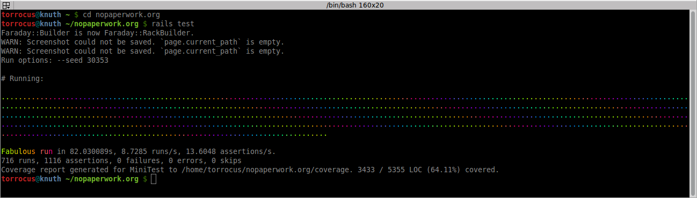

Do you know you can test?
How do you do automated tests in Ruby?
Code
```ruby
def average(array = [])
size = array.size
array.sum / size.to_f
end
```
Tests
```ruby
average([2]) == 2
=> true
average([1, 2]) == 1.5
=> true
average([1, 2, 3]) == 2
=> true
```
RSpec
How does this work?
```ruby
expect(actual).to eq(expected)
```
Tests
```ruby
expect(average([2])).to eq(2)
=> true
expect(average([1, 2])).to eq(1.5)
=> true
expect(average([1, 2, 3])).to eq(2)
=> true
```
Mini Test
How does this work?
```ruby
assert_equal expected, actual
```
Tests
```ruby
assert_equal 2, average([2])
=> true
assert_equal 1.5, average([1, 2])
=> true
assert_equal 2, average([1, 2, 3])
=> true
```
Running tests
Nyan Cat

Test-driven development

Create test
```ruby
require 'spec_helper'
describe 'flush?' do
it 'checks if array has one color' do
flush_rule = flush?([1, 1, 1, 1])
expect(flush_rule).to eq(true)
end
end
```
Run test
```bash
$ rspec spec/lib/flush_spec.rb
Randomized with seed 35317
F
Failures:
1) flush? checks if array has one color
Failure/Error: flush_rule = flush?([1, 1, 1, 1])
NoMethodError:
undefined method `flush?' for #
# ./spec/lib/flush_spec.rb:5:in `block (2 levels) in '
Finished in 0.01294 seconds (files took 0.75094 seconds to load)
1 example, 1 failure
```
Create method
```ruby
def flush?
end
```
Run test
```bash
$ rspec spec/lib/flush_spec.rb
Randomized with seed 28476
F
Failures:
1) flush? checks if array has one color
Failure/Error:
def flush?
end
ArgumentError:
wrong number of arguments (given 1, expected 0)
# ./spec/lib/flush_spec.rb:3:in `flush?'
# ./spec/lib/flush_spec.rb:9:in `block (2 levels) in '
Finished in 0.01024 seconds (files took 0.66129 seconds to load)
1 example, 1 failure
```
Add argument
```ruby
def flush?(array)
end
```
Run test
```bash
$ rspec spec/lib/flush_spec.rb
Randomized with seed 34173
F
Failures:
1) flush? checks if array has one color
Failure/Error: expect(flush_rule).to eq(true)
expected: true
got: nil
(compared using ==)
# ./spec/lib/flush_spec.rb:10:in `block (2 levels) in '
Finished in 0.05983 seconds (files took 0.83267 seconds to load)
1 example, 1 failure
```
Add first logic
```ruby
def flush?(array)
true
end
```
Run test
```bash
$ rspec spec/lib/flush_spec.rb
Randomized with seed 40116
.
Finished in 0.01189 seconds (files took 0.65796 seconds to load)
1 example, 0 failures
```
Add new test
```ruby
describe 'flush?' do
it 'checks if array has one color'
it 'checks if array has more then one color' do
flush_rule = flush?([1, 1, 2, 1])
expect(flush_rule).to eq(false)
end
end
```
And run this tests
```bash
$ rspec spec/lib/flush_spec.rb
Randomized with seed 6606
.F
Failures:
1) flush? checks if array has more then one color
Failure/Error: expect(flush_rule).to eq(false)
expected: false
got: true
(compared using ==)
# ./spec/lib/flush_spec.rb:15:in `block (2 levels) in '
Finished in 0.04907 seconds (files took 0.63654 seconds to load)
2 examples, 1 failure
```
Add more logic
```ruby
def flush?(array)
array.uniq.size == 1
end
```
Run tests
```bash
$ rspec spec/lib/flush_spec.rb
Randomized with seed 33907
..
Finished in 0.01092 seconds (files took 0.57891 seconds to load)
2 examples, 0 failures
```

Agnieszka Małaszkiewicz
agnieszka (at) fractalsoft (dot) org